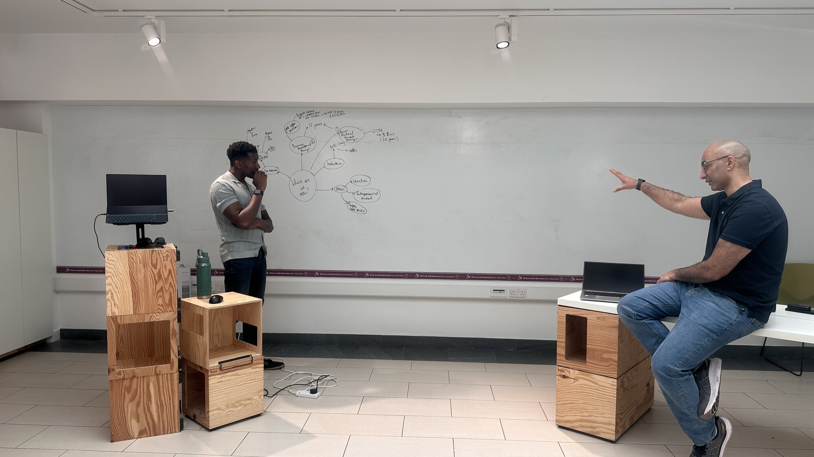

A feature for Directors, VPs, and Executives
LeadStrong.
For the corporate leader carrying decisions that nobody else in your week can help you think through.
01 · The Problem
You’re already operating at a high level. That’s not the problem.
The problem is the gap between the decisions you’re making and the thinking those decisions deserve.
The promotion happens. The remit expands. The decisions get more consequential. But nothing changes about how you think about them. You’re still making them in the same fifteen-minute windows between meetings.
The result: you’re operating at the new altitude with the old thinking infrastructure.
That’s the gap LeadStrong is built around.

02 · The Work
A LeadStrong engagement is a sustained thinking partnership.
Each session is a Whiteboard Session. Your thinking, out of your head, onto the board, into a solution. Between sessions there is no homework; the thinking happens at the board, not in the gaps. We work on whatever altitude the week presents: the quarter-defining decision, the team dynamic that’s stuck, the calendar question that’s quietly draining you.
The work is finished when the work is finished. Most engagements run for years, not because the leader is stuck, but because the thinking partnership compounds.
03 · The Lenses
Three frames the work moves through.
The strategic altitude
Most senior leaders don’t get to think at altitude during the week. The session is where you do, without losing the texture of the operational reality below.
The CliftonStrengths lens
A profile of how you actually operate, used not as a personality test but as an operating language. We use it when the question is about you: your patterns, your blind spots, the conditions that produce your best work.
The FITT16 lens
A 16-archetype model built from your CliftonStrengths Full 34. It maps the drive underneath the strengths, so the strategy fits the leader, not just the role.
In Their Words · From leaders who’ve worked this way
“Working with John has been transformative. I came in overwhelmed and stuck; I left with a clear structure for how I lead and make decisions under pressure.”
“Working with John has given me renewed focus and confidence at a point in my career when I really needed it. The CliftonStrengths work was the most clarifying thing I’ve done professionally.”
04 · One Thing Worth Knowing
The point of the practice is to make the thinking that should already be happening, happen.
Not new knowledge. Not new frameworks. The thinking you’d already be doing if your week had room for it.
05 · The Invitation
The fastest way to know whether LeadStrong fits is to be at the board for an hour.
You’ll know whether the practice is for you. The hour is enough.
Book a Whiteboard SessionWondering what this looks like when the relationship deepens? Read about going further